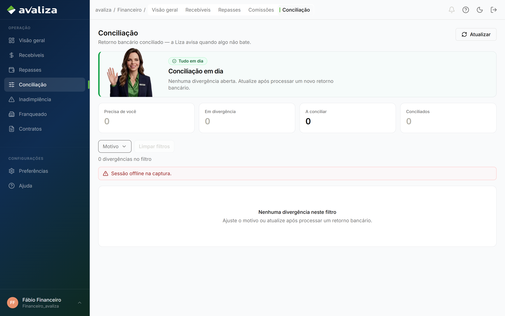
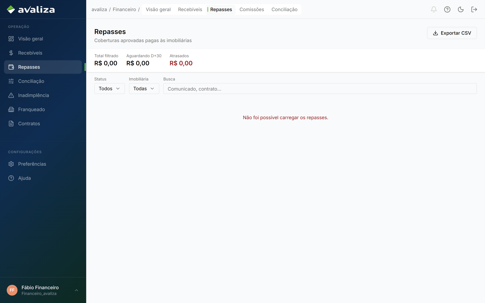
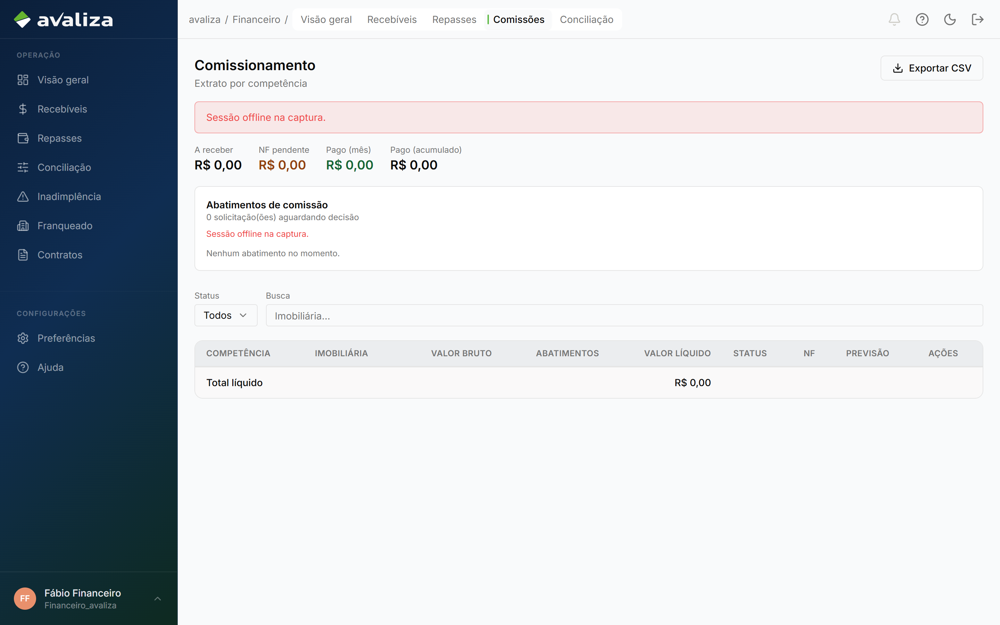
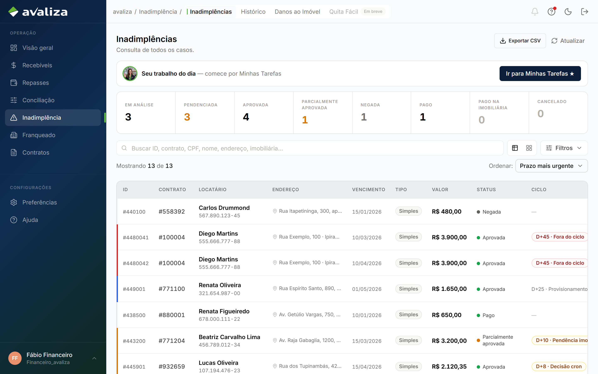
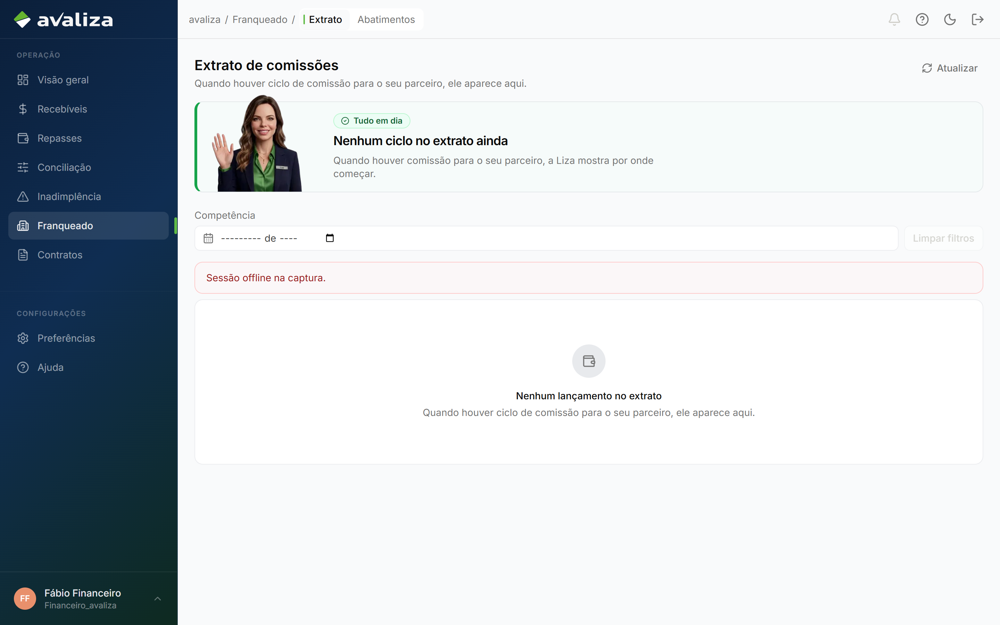

Documento para o responsável · Analista financeiro
Para: Responsável Financeiro Avaliza
Financeiro
Receber, conciliar, repassar, tratar NF e dar baixa em indenização já aprovada. Quatro filas de caixa + uma baixa. Não reabre mérito de IN.
O que vocês fazem
O trabalho no produto, na ordem em que costuma aparecer no dia. Tela é evidência; não é etapa de um tour.
-
Tratar recebíveis
O que ainda não entrou (mensalidade, setup). O dashboard só alerta; o trabalho é nesta fila.
Recebíveis ·
/financeiro/recebiveis
/financeiro/recebiveis -
Conciliar o extrato do dia
Banco vs sistema. Lote zerado ou divergência nomeada. Não espera o repasse D+30.
Conciliação ·
/financeiro/conciliacao
/financeiro/conciliacao -
Emitir repasse
Valor a ir para a imobiliária (D+30 ou atrasado). Fila de saída.
Repasses ·
/financeiro/repasses
/financeiro/repasses -
Tratar comissionamento / NF
URL /financeiro/comissionamento — não está na sidebar. Pendente vs a receber.
Comissionamento / NF ·
/financeiro/comissionamento
/financeiro/comissionamento -
Dar baixa na indenização
Cobertura já aprovada. Marcar pago. Se o valor estiver errado, devolve ao analista de IN.
Baixa de indenização ·
/inadimplencia
/inadimplencia -
Ver o extrato da loja
A mesma superfície de Franqueado. O ciclo é da loja; financeiro enxerga.
Extrato do franqueado ·
/franqueado/extrato
/franqueado/extrato
Ciclos que vocês fecham
Jornadas cujo resultado é deste setor. Fronteira, não o passo a passo acima.
vocês entregam Baixa de indenização Indenização marcada paga. vocês entregam Recebíveis Financeiro sabe o que ainda não entrou. vocês entregam Conciliação Lote do dia zerado ou divergência rastreada. vocês entregam Repasses Repasse emitido ou atraso com dono. vocês entregam Comissionamento / NF NF tratada (pendente / a receber).Ciclos em que só aparecem
Participam da operação. Quem fecha o ciclo é outro setor.
participa · dono: Imobiliária Extrato do franqueado Gestor quer ver o que a loja tem a receber / abater.Isto não é de vocês
Confusão típica deste time. O dono está no link.
- Analisar cobertura — dono: Inadimplência. Se o valor está errado, devolve ao analista de inadimplência. Não reliquida no escuro.
- Exoneração (Avaliza) — dono: Jurídico. Andamento jurídico não liquida NF.
- Extrato do franqueado — dono: Imobiliária. O gestor opera o extrato da loja. Vocês enxergam a mesma superfície, mas o ciclo é da loja.
Recebem de
- Recebem Baixa de indenização de Inadimplência (Analisar cobertura): Cobertura aprovada — mérito encerrado
Passam para
- Os ciclos de vocês não disparam outra jornada. O resultado fica aqui.
Capacidades do shell (não são jornadas)
Menu e leitura. Não fecham ciclo — mas são as telas que o time abre no dia a dia além do trabalho acima.
-
Consulta de contratos
Carteira. Originar é Nova proposta; ativar é o portal.
/contratos
/contratos